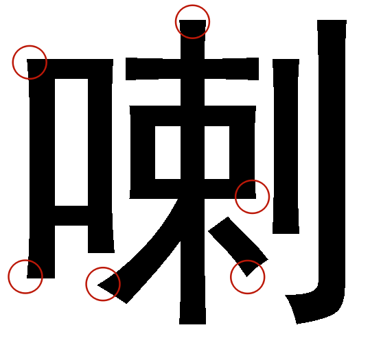

日期：2024-10-10
君子生非异也，善假于物也。
现在是信息时代，不少东西都“飞入寻常百姓家”，平等地离我们每个人都不再遥远。字体也是如此。（对呀，ZUN在游戏、光盘等处使用的字体，就都是前人早就设计好的不是吗？）
按照维基百科的说法，“字体是由一个或多个字型组成的集合，每个字型由具有共同设计特征的字形组成”。
于是更多奇奇怪怪的名词又来了。什么“字型”啊“字形”啊，还有什么“字素”、“字模”、“字符”，各个名词其实常有混用和混淆的现象，在圈内也没有良好的定义。因此，在这里我们不多解释。
同一字形“永” 在中易宋体、中易黑体和中易幼圆体下的字型
此外，我们常说的“宋体”、“黑体”、“楷体”是一些字体的集合，并不特指某一种字体。在Microsoft Word中，所谓的“宋体”“黑体”，其实就是“中易宋体”、“中易黑体”[1]。
字体开发是一个既费时又费力的工作。设计师们为了优化自己设计的字体的观感，要考虑非常多的东西：
比如是否加衬线：
设置怎样的字重：
调节字体（字面框）在字身框中所占的比例，以和其他结构的字达成和谐的效果：
字型在框中不应该恰好填满，菱形结构应放大，矩形结构应当缩小[2]
设定重心和中宫位置，以调节紧凑感和稳定性：
还可考虑 “口” 字部下方是否出头，在稳定与简洁之间做出取舍。
鸿蒙Sans字体的设计：取消非底部口字部的出头[3]
上世纪受到印刷技术的局限，纸面上的油墨有较强的浸润现象，为了保证印刷制品的美观，设计师在字型中加入了供油墨扩散的“油墨陷阱”（随时代发展，因印刷硬件的限制已不复存在。此处的“陷阱”设计仅为设计师创意）：
图中字体的缺口即为油墨陷阱[4]
上世纪时兴照相排版。反复照排会使笔画末端失真，设计师使用“喇叭口”的结构以突笔画的棱角（此结构在当今早已变得不再必要，然而一些字体却将其保留了下来）：
图中圈出了部分喇叭口结构
此外，设计师还需要对一些字型“逐个击破”。如“专”字中的竖折撇，在与两横交叉处有微妙的错位：
说了这么多，但以上的要点，在字体设计中连冰山一角都算不上！
既然字体存在市场，各大厂商也会通过开发商业字体的方式分得一杯羹。比如一些厂商：
方正（Founder）、汉仪（Hanyi）、华文（Sinotype）、文鼎（Arphic）、华康 （Dynalab）（现称威鋒數位DynaComware）等等。
搞嵌字就离不开它们了.jpg
这些公司的字体，不少都是收费商用的。未经允许就商用这些字体，有可能导致版权问题。所以请在认真查找核对后再商用！有趣的是，Windows自带的字体“微软雅黑”，是微软委托方正制作的，如果贸然商用此字体，也可能会吃到律师函哦。
不过一些字体是可以免费商用的。比如Adobe和谷歌联合推出的部分思源系列、阿里巴巴推出的普惠系列等等。
如果你看到一些字体，想要知道它们的名字，可以使用 求字体(qiuziti.com) 或者 MyFonts(myfonts.com) 等网站识图搜索。一般这样的网站还会有关于字体的更多信息，包括是否可以免费商用。
以东方永夜抄为例，在封面上，主标题的字体为“DFP隷書体”，副标题为“DF郭泰碑W4”,版本号为“Comic Sans”，英文字体为“Park Avenue”。
东方妖妖梦的标题，采用了“DC麗楷書W5”
其中你肯定会疑惑：“DF”“DC”是什么意思？代指某些厂商吗？没错，DF是DynaFont的缩写，DC是DynaComware(ダイナコムウェア)的缩写。DynaComware是华康的现称呼，DynaFont是其字体产品。由于华康是中国台湾企业，所以对繁体字及日语中的汉字字库的开发较早。难怪汉化组的师傅们推荐我用的字体都和“华康”有关呢。
这里的“东方梦时空”用的是“MS明朝”字体。
星莲船标题使用“HG明朝E”字体。
“明朝体”即我们所称的“宋体”。有人认为，因为19世纪传入日本的宋体仿自明朝万历年间之字体，所以日韩将其冠以“明朝”之名。
MS明朝和HG明朝E都是Richo（リコー）公司的产品。
2013年，日本设计师森贤人设计了一款东方主题字体，以灵梦和魔理沙为主题将鸟居、阴阳玉、扫帚、星星等元素融入艺术字体的设计。后续几年，他又继续扩充字库，发布幽幽子和八云家主题的字体。

这些作品在booth上

第一弹作品中灵梦主题的两套字体[5]
如果感兴趣的话，可以点击访问这个项目的官网：font.heartx.info
2018年的C94，同人社团ふつうのひと发布了一本字体考据性质的同人志《東方Projectで使用されたフォントまとめ》 [6]，把游戏有关的大部分字体统统总结了个遍，在后续又发布了勘误表。
封面
书中内容样式
这是与此作品有关的两个博客：
可惜的是，这本书电子版和纸质版都买不到了，几年前国内购入的人应该也很少，可以算是“失传了”吧。。。如果大家谁有相关资源的线索，请联系我们，欧内盖！
[1] ↑ 参见CSDN大佬的整理：Windows和Office的那些中文内置字体
[2] ↑ 此处图片摘自：超全面！这可能是最完整的字体设计基础知识！- 优设
[2] ↑ HarmonyOS Developer 设计文档和资源
[4] ↑ 此处英文字体来自 Butter Sans - 站酷
[5] ↑ 灵梦主题第二套字体截图自视频 「字体科普」二次元字体的拟人化设计｜东方Project字体计划 - 东方音像馆 - b23.tv
[6] ↑ 关于此书更多信息可参见：東方Projectで使用されたフォントまとめ - THBWiki